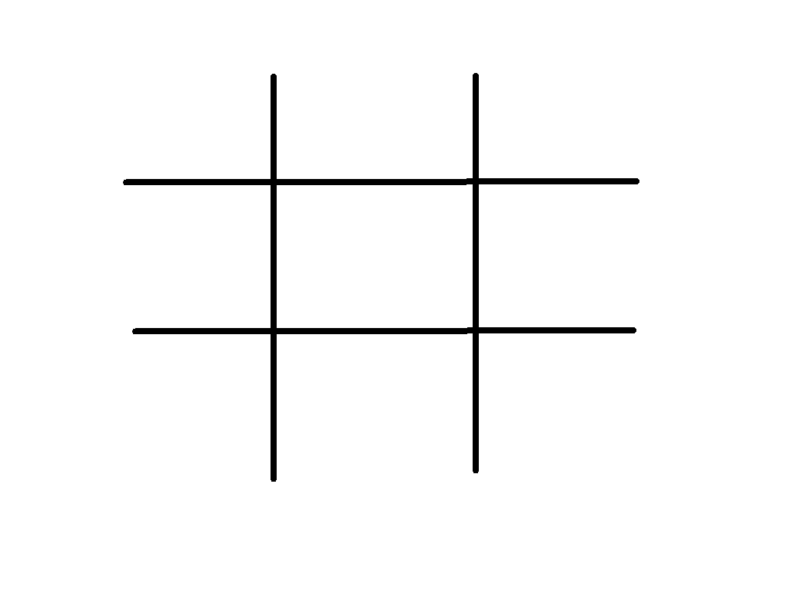

Summary
A fun game and a great way to pass time with a player, tic-tac-toe or “X” and “O” is a simple two player game for all ages. Younger players can learn the idea of rules and sportsmanship while the older players use it as an exercise to interact with each other. This short guide will give you some background on the game, how to play, and get you started on your first match.
Learning Some Background
Dating back to the first century BC, Romans played tic-tac-toe, then called “terni lapilli” translated to mean “three little stones”. Though the rules were different then, the concept of the game is similar to the modern day tic-tac-toe.
The English version in the 16th century referred to the game as “tit-tat-toe”, highlighting some relationship to a tit for tat situation.
Variations of the game have developed throughout the centuries but the goal has always remained the same - to win with
“3 in a row”.
Setting up the Game
Popular for its simple nature, tic-tac-toe does not require much. First, you will have to select two players and then decide who will play first. Each player is required to choose either the “O” or “X” mark, and it is not unusual that the first player gets the first pick.
The objective of the game is to match these marks in a row of three either diagonally, vertically or horizontally on the grid.
Things you would need:
- A blank sheet of paper
- A pen, pencil or any writing tool
- Great sportsmanship
Playing the Game
To get started, using the pen or pencil, one player draws a 3x3 grid. This grid should have three columns no longer than two inches and not wider than one inch, similar to the image shown below. This should ensure that the X’s and O’s can fit within the grid. For every game, you will have to draw a new grid and you can play as many games as you’d like.

To begin the game, the first player can choose to place their mark in any empty section of the grid. For every other game,the first player will be the winner of the last game unless there’s a draw and you have to choose a first player again.
After the first player places their mark, the next player then places their own mark in an empty space as either a defense against the first player’s move, or to start their own sequence in an empty space.
The game then continues this way between the two players until one person is able to get all of their marks in a row.
Have Fun
Naturally, the first player would have more of a chance to win the game but a strong second move should not be underestimated. The best part of the game is the opportunity to have fun and learn the other player and how you both can follow rules.
You can also play this game digitally with either a web application, a mobile app or using a simple paint tool. For all ages, this classic game can bring joy to many and can be a great pastime played from anywhere.